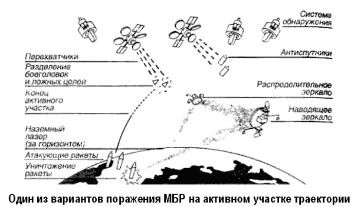
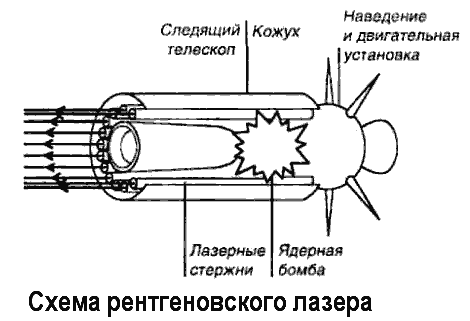
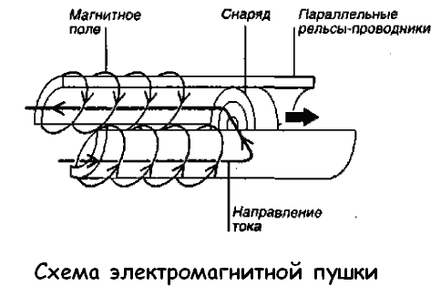

Программа «СОИ»
Как очень быстро выяснилось, ассигнования на «СОИ», предусмотренные бюджетом, не могли обеспечить успешного решения грандиозных задач, поставленных перед программой. Не случайно многие эксперты оценивали реальные расходы на программу в течение всего срока ее реализации в сотни миллиардов долларов. По оценке сенатора Преслера, «СОИ» — это программа, требующая для своего завершения расходов в сумме от 500 миллиардов до 1 триллиона долларов (!). Американский экономист Перло называл еще более значительную сумму — 3 триллиона долларов (!!!).
Однако уже в апреле 1984 года свою деятельность начала Организация по осуществлению стратегической оборонной инициативы (ООСОИ). Она представляла собой центральный аппарат крупного научно-исследовательского проекта, в котором, помимо организации министерства обороны, участвовали организации гражданских министерств и ведомств, а также учебных заведений. В составе центрального аппарата ООСОИ было занято около 100 человек. Как орган программного управления ООСОИ отвечала за разработку целей научно-исследовательских программ и проектов, контролировала подготовку и исполнение бюджета, выбирала исполнителей конкретных работ, поддерживала повседневные контакты с аппаратом президента США, Конгрессом, другими органами исполнительной и законодательной власти.
На первом этапе работ над программой главные усилия ООСОИ были сосредоточены на координации деятельности многочисленных участников исследовательских проектов по проблематике, разбитой на такие важнейшие пять групп: создание средств наблюдения, захвата и сопровождения целей; создание технических средств, использующих эффект направленной энергии, для последующего включения их в системы перехвата; создание технических средств, использующих эффект кинетической энергии для дальнейшего включения их в системы перехвата; анализ теоретических концепций, на базе которых будут создаваться конкретные системы оружия и средства управления ими; обеспечение эксплуатации системы и повышение ее эффективности (повышение поражающей способности, защищенности компонентов системы, энергоснабжение и материально-техническое обеспечение всей системы).
Как же выглядела программа «СОИ» в первом приближении?
Критерии эффективности после двух-трех лет работ по программе «СОИ» официально формулировались следующим образом.
Во-первых, оборона против баллистических ракет должна быть способна уничтожить достаточную часть наступательных сил агрессора, с тем чтобы лишить его уверенности в достижении своих целей.
Во-вторых, оборонительные системы в достаточной степени должны выполнять свою задачу даже в условиях нанесения по ним ряда серьезных ударов, то есть обладать достаточной живучестью.
В-третьих, оборонительные системы должны подорвать веру у вероятного противника в возможность их преодоления за счет наращивания дополнительных наступательных вооружений.
Стратегия программы «СОИ» предусматривала капиталовложения в технологическую базу, которая могла бы обеспечить принятие решения о вступлении в фазу полномасштабной разработки «СОИ» первого этапа и подготовить основу для вступления в фазу концептуальной разработки последующего этапа системы. Такое распределение по этапам, сформулированное только через несколько лет после обнародования программы, имело целью создать основу для наращивания первичных оборонительных возможностей с внедрением в дальнейшем перспективных технологий, таких как оружие направленной энергии, хотя первоначально авторы проекта считали возможным с самого начала реализовывать самые экзотические проекты.
Тем не менее во второй половине 80-х годов в качестве элементов системы первой очереди рассматривались такие, как космическая система обнаружения и сопровождения баллистических ракет на активном участке траектории их полета; космическая система обнаружения и сопровождения головных частей, боеголовок и ложных целей; наземная система обнаружения и сопровождения; перехватчики космического базирования, обеспечивающие поражение ракет, головных частей и их боеголовок; противоракеты заатмосферного перехвата баллистических целей («ERIS»); система боевого управления и связи.

В качестве основных элементов системы на последующих этапах рассматривались следующие: пучковое оружие космического базирования, основанное на использовании нейтральных частиц; противоракеты для перехвата целей в верхних слоях атмосферы («HEDI»); бортовая оптическая система, обеспечивающая обнаружение и сопровождение целей на среднем и конечном участках траекторий их полета; наземная РАС («GBR»), рассматриваемая в качестве дополнительного средства для обнаружения и сопровождения целей на конечном участке траектории их полета; лазерная установка космического базирования, предназначенная для выведения из строя баллистических ракет и противоспутниковых систем; пушка наземного базирования с разгоном снаряда до гиперзвуковых скоростей («HVG»); наземная лазерная установка для поражения баллистических ракет.

Те, кто планировал структуру «СОИ», мыслили систему как многоярусную, способную обеспечить перехват ракет в ходе трех этапов полета баллистических ракет: на этапе ускорения (активный участок траектории полета), средней части траектории полета, на которую в основном приходится полет в космосе после того, как боеголовки и ложные цели отделились от ракет, и на заключительном этапе, когда боеголовки устремляются к своим целям на нисходящем участке траектории. Самым важным из этих этапов считался этап ускорения, на протяжении которого боеголовки многозарядных МБР еще не отделились от ракеты, и их можно вывести из строя одним выстрелом. Руководитель управления СОИ генерал Абрахамсон заявил, что в этом и заключается главный смысл «звездных войн».
Из-за того, что конгресс США, исходя из реальных оценок состояния работ, систематически урезал (сокращения до 40–50 % ежегодно) запросы администрации на реализацию проектов, авторы программы переводили отдельные ее элементы из первого этапа в последующие, работы по некоторым элементам сокращались, а некоторые исчезали вовсе.
Тем не менее наиболее проработанными среди других проектов программы «СОИ» были неядерные противоракеты наземного и космического базирования, что позволяет рассматривать их в качестве кандидатов для первой очереди ныне создаваемой противоракетной обороны территории страны.

Среди этих проектов фигурируют в том числе противоракета «ЭРИС» для поражения целей на заатмосферном участке, противоракета «ХЕДИ» для ближнего перехвата, а также наземная РЛС, которая должна обеспечить задачу наблюдения и сопровождения на конечном участке траектории.
Наименее продвинутыми оказались проекты по оружию направленной энергии, которые объединяют исследования по четырем базовым концепциям, рассматриваемым в качестве перспективных для многоэшелонной обороны, включая лазеры наземного и космического базирования, ускорительное (пучковое) оружие космического базирования, ядерное оружие направленной энергии.
К работам, находящимся практически на начальном этапе, могут быть отнесены проекты, связанные с комплексным решением задачи.
По целому ряду проектов выявлены только проблемы, которые предстоит решить. Сюда относятся проекты по созданию ядерных энергетических установок, базирующихся в космосе и обладающих мощностью в 100 кВт с пролонгацией по мощности до нескольких мегаватт.
Требовался программе «СОИ» и недорогой универсальный в применении летательный аппарат, способный вывести груз массой 4500 килограммов и экипаж из двух человек на полярную орбиту. ООСОИ потребовала от фирм провести анализ трех концепций: аппарата с вертикальными стартом и посадкой, аппарата с вертикальным стартом и горизонтальной посадкой, а также аппарата с горизонтальными стартом и посадкой.
Как было объявлено 16 августа 1991 года, победителем конкурса стал проект аппарата «Дельта Клиппер» («Delta Clipper») с вертикальными стартом и посадкой, предложенный фирмой «Макдоннелл-Дуглас». Компоновка напоминала сильно увеличенную капсулу «Меркурий».
Все эти работы могли продолжаться неопределенно долго, и чем дольше реализовывался бы проект «СОИ», тем труднее было бы его остановить, не говоря о неуклонно возраставших почти в геометрической прогрессии ассигнованиях на эти цели. 13 мая 1993 года министр обороны США Эспин официально объявил о прекращении работ над проектом «СОИ». Это было одно из самых серьезных решений демократической администрации с момента ее прихода к власти.
Среди важнейших аргументов в пользу этого шага, последствия которого широко обсуждались экспертами и общественностью во всем мире, президент Билл Клинтон и его окружение единодушно назвали распад Советского Союза и как следствие безвозвратную утрату США своего единственного достойного соперника в противоборстве сверхдержав.
Видимо, именно это заставляет некоторых современных авторов утверждать, что программа «СОИ» изначально задумывалась как блеф, направленный на запугивание руководства противника. Дескать, Михаил Горбачев и его окружение приняли блеф за чистую монету, испугались, а от испуга проиграли Холодную войну, что привело к развалу Советского Союза.
Это неправда. Далеко не все в Советском Союзе, в том числе и в высшем руководстве страны, принимали на веру распространяемую Вашингтоном информацию в отношении «СОИ». В результате исследований, проведенных группой советских ученых под руководством вице-президента АН СССР Велихова, академика Сагдеева и доктора исторических наук Кокошина, был сделан вывод о том, что рекламируемая Вашингтоном «система явно не способна, как это утверждается ее сторонниками, сделать ядерное оружие «бессильным и устаревшим», обеспечить надежное прикрытие территории США, а тем более их союзников в Западной Европе или в других районах мира». Более того, в Советском Союзе уже давно разрабатывалась собственная система ПРО, элементы которой можно было использовать в программе «АнтиСОИ».